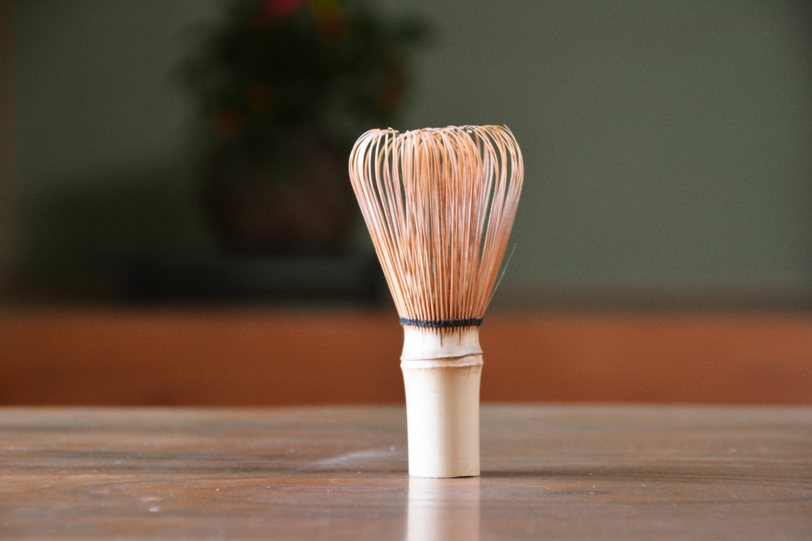
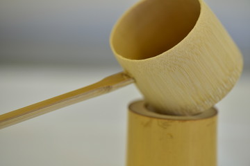

道具紹介 道具一覧
- 全て
- 抹茶茶碗
- 茶筅
- 茶杓
- 水指
- 棗
- 柄杓
- 帛紗
-
茶碗

-
茶筅
 -
茶杓
-
水差

-
棗
-
柄杓
 -
帛紗
-
● 茶碗（ちゃわん）
抹茶を飲むための器を茶碗と呼びます。
中国天目茶碗が伝わり、茶式が成立後、千利休によって茶の湯が確立される前後に、朝鮮から高麗茶碗が伝わり国焼茶碗作られています。
-
● 茶筅(ちゃせん)
茶筅（ちゃせん）は、抹茶を点てるための専用の道具です。主に竹でできており、抹茶を美味しく仕上げる上で重要な役割を担います。
-
● 茶杓(ちゃしゃく)
茶杓（ちゃしゃく）は、茶器の中から茶をすくう匙のようなものです。
-
● 水指(みずさし)
席中で釜に補給する水や、茶碗や茶筅をすすぐ水を入れる器です。
水指の条件は、まず清浄感、持ち運びが容易で、柄が入るだけの口の大きさ、安定感の四つからなり、その素材は金属、陶磁器、木竹工品等に分類されます。
-
●棗
薄茶を入れる容器で、薄器ともいい、茶で塗られたものが一般的です。
時代の古いものなどは、時に仕覆を付けて、濃茶器としても使われています。
型は、利休型の大・中・小の繋（植物の裏の実に形が似ているところからの名称）が基本になっていて、真塗（黒塗）のほかに朱塗や溜塗、種々の時絵がほどこされたもの、木地のままのもの、一閑張や陶磁器製のものなどがあります。
-
● 柄杓
素材は竹でできており、柄杓（ひしゃく）は、釜（かま）や水指（みずさし）から湯や水を汲む際に用いる道具です。
-
● 帛紗(ふくさ)
絹（きぬ）の四角い布で、主に茶道具を清めたり、扱うときに使う道具です。